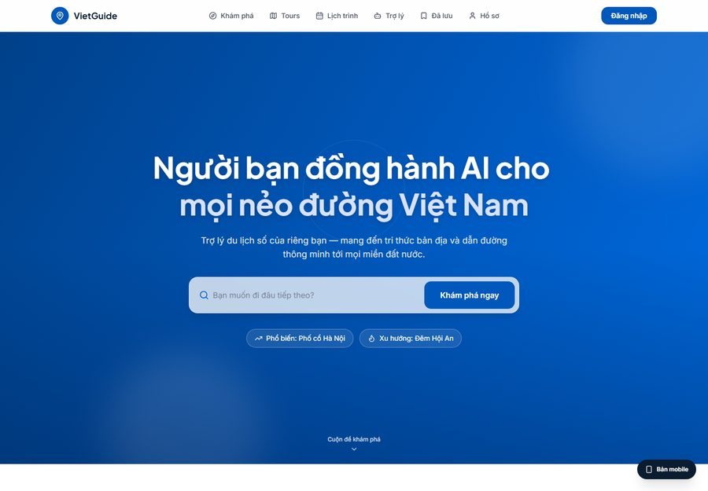

AI Engineer and recent Artificial Intelligence & Data Science graduate. I build machine-learning, computer-vision and LLM/RAG solutions — turning models into real products.
Training and deploying ML/DL models with PyTorch and Hugging Face for real applications.
Object detection & recognition — YOLO, ST-GCN, OpenCV on both server and edge devices.
Retrieval-augmented chatbots and agents with LangChain, Gemini API, MongoDB and Chroma vector DB.
I focus on turning AI research into products that work in the real world — from data preprocessing and model training to deployment on servers and embedded hardware.
Comfortable across the stack: Python, C++, C#, PyTorch, Hugging Face, OpenCV, Streamlit, LangChain, MongoDB and Microsoft SQL.
See my projects →I care about building things that actually ship and hold up in production — measured, documented and reliable.
A B.Sc. in Artificial Intelligence & Data Science, now pursuing an M.Sc. in Computer Science at the Posts & Telecommunications Institute of Technology (2025–2027) — alongside hands-on internships and a 3rd-prize research project.
Coursework in Data Preprocessing, Data Visualization and Artificial Intelligence — backed by IELTS 5.5 for working in English.
See experience
⭐ Featured ProjectA mobile-first web app where an AI agent acts as a virtual tour guide: free-form Q&A about landmarks via RAG (ChromaDB knowledge base + Tavily web search, auto-matching the user's language), a real-time voice assistant (Whisper STT + edge-tts over WebSocket), AI-generated multi-day itineraries with citations, community reviews and 360° VR tours.
Retrieval-augmented chatbot answering history questions, built end to end.
NLP model predicting an article's category from its title using PhoBERT.
Real-time fire detection embedded on Raspberry Pi — 3rd Prize, Scientific Research.
A 30-day sprint: ship something real every day and publish it here — from AI agents to go-to-market thinking.